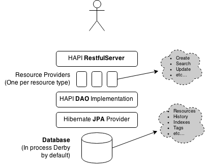

JPA Server
The HAPI FHIR RestfulServer module can be used to create a FHIR server endpoint against an arbitrary data source, which could be a database of your own design, an existing clinical system, a set of files, or anything else you come up with.
HAPI also provides a persistence module which can be used to provide a complete RESTful server implementation, backed by a database of your choosing. This module uses the JPA 2.0 API to store data in a database without depending on any specific database technology.
Important Note: This implementation uses a fairly simple table design, with a single table being used to hold resource bodies (which are stored as CLOBs, optionally GZipped to save space) and a set of tables to hold search indexes, tags, history details, etc. This design is only one of many possible ways of designing a FHIR server so it is worth considering whether it is appropriate for the problem you are trying to solve.
Getting Started
The easiest way to get started with HAPI's JPA server module is to begin with the example project. There is a complete sample project found in our GitHub repo here: hapi-fhir-jpaserver-example
This example is a fully contained FHIR server, supporting all standard operations (read/create/delete/etc). It bundles an embedded instance of the Apache Derby Java database so that the server can run without depending on any external database, but it can also be configured to use an installation of Oracle, Postgres, etc.
To take this project for a spin, check out the sources from GitHib (or download a snapshot), and then build the project:
$ cd hapi-fhir-jpaserver-example $ mvn install
You now have two options for starting the server:
- Deploy to Tomcat/JBoss/Websphere/etc: You will now have a file in your target directory called hapi-fhir-jpaserver-example.war. This WAR file can be deployed to any Servlet container, at which point you could access the server by pointing your browser at a URL similar to the following (you may need to adjust the port depending on which port your container is configured to listen on): http://localhost:8080/hapi-fhir-jpaserver-example/
- Run with Maven and Embedded Jetty: To start the server directly within Maven, you can execute the following command:
You can then access the server by pointing your browser at the following URL: http://localhost:8080/hapi-fhir-jpaserver-example/$ mvn jetty:run
Configuring The JPA Server
The JPA server is configured through a series of configuration files, most of which are documented inline.
- FhirServerConfig.java: Configures the database connection settings
DaoConfig
The Spring confguration contains a definition for a bean called daoConfig, which will look something like the following:
@Bean()
public DaoConfig daoConfig() {
DaoConfig retVal = new DaoConfig();
retVal.setAllowMultipleDelete(true);
retVal.setAllowInlineMatchUrlReferences(true);
return retVal;
}
You can use this method to change various configuration settings on the DaoConfig bean which define the way that the JPA server will behave. See the DaoConfig JavaDoc for information about the available settings.
External/Absolute Resource References
Clients may sometimes post resources to your server that contain absolute resource references. For example, consider the following resource:
<Patient xmlns="http://hl7.org/fhir">
<id value="patient-infant-01"/>
<name>
<use value="official"/>
<family value="Miller"/>
<given value="Samuel"/>
</name>
<managingOrganization>
<reference value="http://example.com/fhir/Organization/123"/>
</managingOrganization>
</Patient>
By default, the server will reject this reference, as only local references are permitted by the server. This can be changed however.
If you want the server to recognize that this URL is actually a local reference (i.e. because the server will be deployed to the base URL http://example.com/fhir/) you can configure the server to recognize this URL via the following DaoConfig setting:
@Bean()
public DaoConfig daoConfig() {
DaoConfig retVal = new DaoConfig();
// ... other config ...
retVal.getTreatBaseUrlsAsLocal().add("http://example.com/fhir/");
return retVal;
}
On the other hand, if you want the server to be configurable to allow remote references, you can set this with the confguration below. Using the setAllowExternalReferences means that it will be possible to search for references that refer to these external references.
@Bean()
public DaoConfig daoConfig() {
DaoConfig retVal = new DaoConfig();
// Allow external references
retVal.setAllowExternalReferences(true);
// If you are allowing external references, it is recommended to
// also tell the server which references actually will be local
retVal.getTreatBaseUrlsAsLocal().add("http://mydomain.com/fhir");
return retVal;
}
Logical References
In some cases, you may have references which are Logical References, which means that they act as an identifier and not necessarily as a literal web address.
A common use for logical references is in references to conformance resources, such as ValueSets, StructureDefinitions, etc. For example, you might refer to the ValueSet http://hl7.org/fhir/ValueSet/quantity-comparator from your own resources. In this case, you are not neccesarily telling the server that this is a real address that it should resolve, but rather that this is an identifier for a ValueSet where ValueSet.url has the given URI/URL.
HAPI can be configured to treat certain URI/URL patterns as logical by using the DaoConfig#setTreatReferencesAsLogical property (see JavaDoc). For example:
// Treat specific URL as logical
myDaoConfig.getTreatReferencesAsLogical().add("http://mysystem.com/ValueSet/cats-and-dogs");
// Treat all references with given prefix as logical
myDaoConfig.getTreatReferencesAsLogical().add("http://mysystem.com/mysystem-vs-*");
Search Result Caching
By default, search results will be cached for one minute. This means that if a client performs a search for Patient?name=smith and gets back 500 results, if a client performs the same search within 60000 milliseconds the previously loaded search results will be returned again. This also means that any new Patient resources named "Smith" within the last minute will not be reflected in the results.
Under many normal scenarios this is a n acceptable performance tradeoff, but in some cases it is not. If you want to disable caching, you have two options:
Globally Disable / Change Caching Timeout
You can change the global cache using the following setting:
myDaoConfig.setReuseCachedSearchResultsForMillis(null);
Disable Cache at the Request Level
Clients can selectively disable caching for an individual request using the Cache-Control header:
Cache-Control: no-cache
Disable Paging at the Request Level
If the client knows that they will only want a small number of results (for example, a UI containing 20 results is being shown and the client knows that they will never load the next page of results) the client may also use the nostore directive along with a HAPI FHIR extension called max-results in order to specify that only the given number of results should be fetched. This directive disabled paging entirely for the request and causes the request to return immediately when the given number of results is found. This can cause a noticeable performance improvement in some cases.
Cache-Control: nostore, max-results=20
Architecture
The HAPI JPA Server has the following components:
- Resource Providers: A RESTful server Resource Provider is provided for each resource type in a given release of FHIR. Each resource provider implements a @Search method implementing the complete set of search parameters defined in the FHIR specification for the given resource type.
The resource providers also extend a superclass which implements all of the other FHIR methods, such as Read, Create, Delete, etc.
Note that these resource providers are generated as a part of the HAPI build process, so they are not checked into Git. You can see their source in the JXR Report, for example the PatientResourceProvider.
The resource providers do not actually implement any of the logic in searching, updating, etc. They simply receive the incoming HTTP calls (via the RestfulServer) and pass along the incoming requests to the DAOs.
- HAPI DAOs: The DAOs actually implement all of the database business logic relating to the storage, indexing, and retrieval of FHIR resources, using the underlying JPA API.
- Hibernate: The HAPI JPA Server uses the JPA library, implemented by Hibernate. No Hibernate specific features are used, so the library should also work with other providers (e.g. Eclipselink) but it is not tested regularly with them.
- Database: The RESTful server uses an embedded Derby database, but can be configured to talk to any database supported by Hibernate.
Additional Information
- This page has information on loading national editions (UK specifically) of SNOMED CT files into the database.